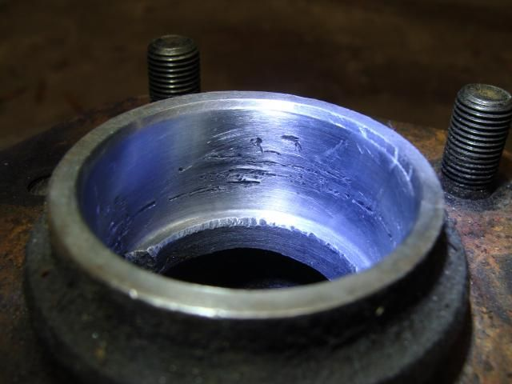

-
I've done a couple of brake jobs in the past, and have repacked the front wheel bearings but not replaced them. Since I'm basically getting my Z back to as close to stock as I can get it (within reason), and have no idea how many miles are on the current bearings, I decided to replace them after I took the rotors to be resurfaced. Somewhere I read that if you replace the bearings, you should replace the outer race as well as the bearing cage/inner race assembly. In the FSM, it says to use a brass drift and mallet to drive it out "if replacement is necessary"… this makes me question the advice I read (which may have been on a parts place website… I don't remember).
I decided to go ahead and give it a shot, but I didn't have a brass drift. The point of the brass is that it's softer than the rotor, so if anything is damaged it's the drift. Of course, I knew this before I started whaling away at it, but I just didn't think it would be that bad. It took quite a while using a hammer and flat blade screwdriver, but I eventually got the outer race off of the outboard side of the rotor. The picture below is after quite a bit of work with 320 grit wet/dry paper trying to smooth out the surface. To the touch, it doesn't feel too bad. The picture shows clearly that I'm a moron and shouldn't have done it that way.

After realizing this was not a smart decision, I cleaned up and inspected the outer race on the inboard bearing and it seems to be quite nice. Same goes for both outer races on the other rotor… so I'm not planning on touching them.
My question is whether this one is going to need to be turned down to a smooth finish like the brake rotor surface. Since it's just going to hold the outer race in place, I don't think it's necessary. My real concern is whether it may cause the race to not seat properly. What is the best way to seat the outer race? At first I thought it would just seat when I put the rotor on the spindle and preloaded the bearing, but then I realized the rollers would be applying that force and it didn't seem like the right way to do it. Seems like I should drive it into position while the rotor's off the car…
I am now ready for my public flogging for such a rookie/newb/moron question… as long as someone can take pity on me and answer my questions, I'll accept all other castigation as due penalty for not doing the research first…
Thanks (I think).'86 NA - original owner (1986-93) and final owner (2005-present)
My build thread: http://z31performance.com/showthread…-Got-mine-back
-
First of all that's your hub, not your rotor…
The race will seat fine, as long as you have no bumps where you mangled it, divots are fine though
A good way to test would be to cut your old race in half, use the best half as a scraper, slide it down the bad side of the hub, feeling if it catches on anything… then I would suggest using a sander head on a dremel to knock it down, repeat
At least non-turbo hubs are cheap if you really need to get one
-
When installing new race find a socket that just fits inside the hub and sits on top of outer race . Then drive it in till it has seated
harbor freight sells a bearing race driver for cheep -
when installing the new race…use the old race.
as GE said, you should be fine installing the new race without issue.Damn dirty angels....these cars!
Current Daily Driver - 86 Turbo.
Under the cover - THE BANANA… that needs to be re-energized.
sigpic -
Right, old race DUH, hand on face -
Well that was pretty painless, except for this…
Since the rotor and the hub are bolted together, I just always refer to it as the rotor… but thanks for pointing out my error.Originally posted by G-E View Post
Thanks for the tips… I'll check out HF, but AZ may also have something they'll rent to do this.'86 NA - original owner (1986-93) and final owner (2005-present)
My build thread: http://z31performance.com/showthread…-Got-mine-back
-
seriously. hammer, and old race. problem solved.Damn dirty angels....these cars!
Current Daily Driver - 86 Turbo.
Under the cover - THE BANANA… that needs to be re-energized.
sigpic -
FWIW:
For those of you who have access to a Mig/Tig, etc. this is a very simple to solve problem.
I faced this situation almost on a daily basis as a machine repair/ machine build tech.
After you remove the inner race run a bead of weld about half way around the inner circumference of the outer race.
This has the effect of shrinking the race. After the weld has cooled, the race will practically fall out.
Trivia: in 2000, when I retired, a complement of bearings to rebuild the spindles on a Cone 1 1/2" Auto screw machine was approx. $40,000.
86na
88t -
Sorry; should have included the flip side to the above.
Installing outer race: freeze it! dry ice is best (CO2 fire ext are good for this)
Installing open bearing on a shaft: cook it (boiled in water)
" sealed " " : press; unless you have the induction heater designed for it.
86na
88t -
So one question about using the old race… As I was trying to drive it out, it really didn't turn loose until it was past flush with the outside of the hub face. It seems like the old race will get stuck if I try to use it to drive in the new one. I got a driver set from AutZone which has a slightly smaller OD than the ID of the hub, as well as a tapered surface which should spread the load across more of the race instead of just the edge. It cost $60 to rent and I get my money back when I take it back.'86 NA - original owner (1986-93) and final owner (2005-present)
My build thread: http://z31performance.com/showthread…-Got-mine-back
-
Just for the record, that tapered part of the driver is not supposed to contact the tapered surface of the race. I did some reading and watched a video on the interweb and realized that the outer lip of the race is, in fact, what's supposed to make contact with the driver. The tool worked great, it's machined to a flat smooth surface that applied an even force around the entire circumference of the race. I'm sure a socket of the appropriate size would probably work too, I just don't have anything that big. For anyone who's looking to do something like this, I recommend using the purpose-built tool.Originally posted by wbnethery3 View Post'86 NA - original owner (1986-93) and final owner (2005-present)
My build thread: http://z31performance.com/showthread…-Got-mine-back
-
well done! although after $60k-80k worth of tools… Im not all that interested in buying another.Damn dirty angels....these cars!
Current Daily Driver - 86 Turbo.
Under the cover - THE BANANA… that needs to be re-energized.
sigpic -
Could I get in your will?Originally posted by Axel kain View Post") Wow, that's quite an investment! Pictures of your garage are required when you're in that league…
'86 NA - original owner (1986-93) and final owner (2005-present)
Wow, that's quite an investment! Pictures of your garage are required when you're in that league…
'86 NA - original owner (1986-93) and final owner (2005-present)
My build thread: http://z31performance.com/showthread…-Got-mine-back

Copyright © 2006–. All rights reserved. Privacy Policy